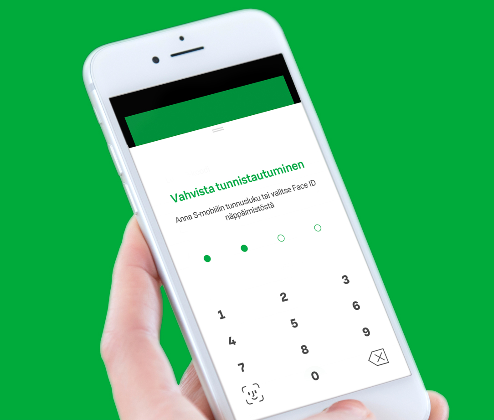

Tunnistautuminen
Tunnuslukutaulukolla tunnistautuminen
Jos k�yt�ss�si ei ole maksutonta S-mobiili -sovellusta voit tunnistautua my�s tunnuslukutaulukolla.
Tunnuslukutaulukolla tunnistautuminen on monivaiheisempi ja k�ytt�j�tunnuksen ja salasanan lis�ksi sinua pyydet��n antamaan tunnuslukutaulukon tunnus sek� mahdollisesti my�s tekstiviestivahvistus.
tai
S-mobiililla tunnistautuminen
Ole hyv� ja yrit� my�hemmin uudelleen.
Lue QR-koodi S-mobiililla
Kirjautuminen onnistuu puhelimen ja alla olevan QR-koodin avulla ilman tunnuksien antamista.
N�in helppoa se on.
-
Avaa S-mobiili ja valitse alavalikosta "Min�".
-
Valitse "Lue QR-koodi" ja seuraa S-mobiilin ohjeita.
Viimeistele tunnistautuminen S-mobiilissa.
Yksil�intitunnus:MP17

tai